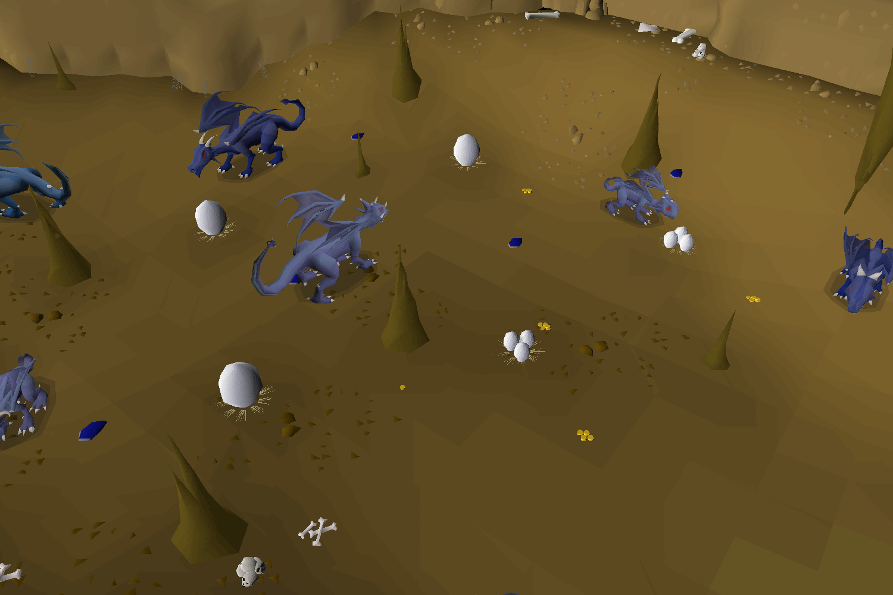
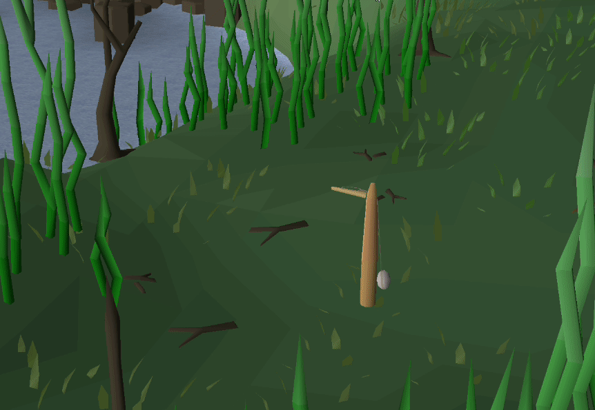
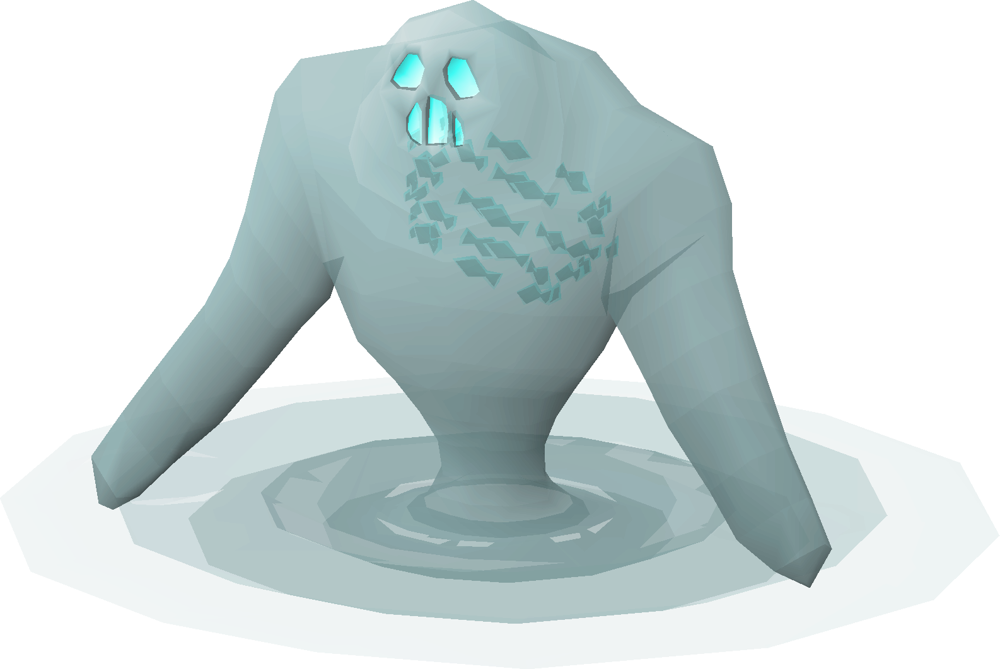
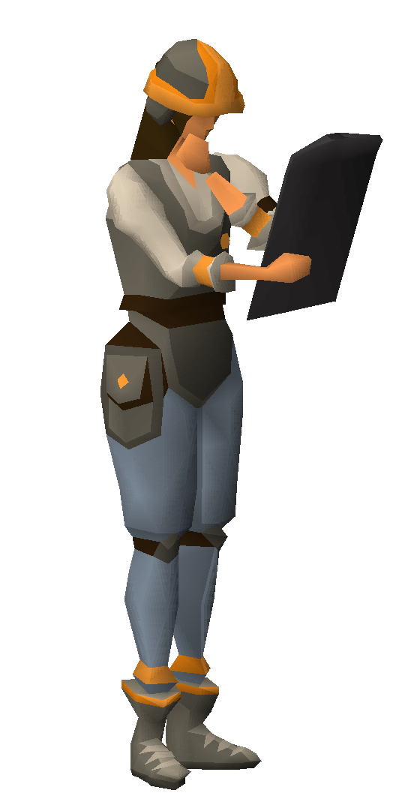
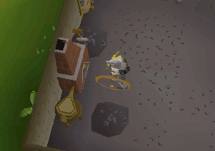
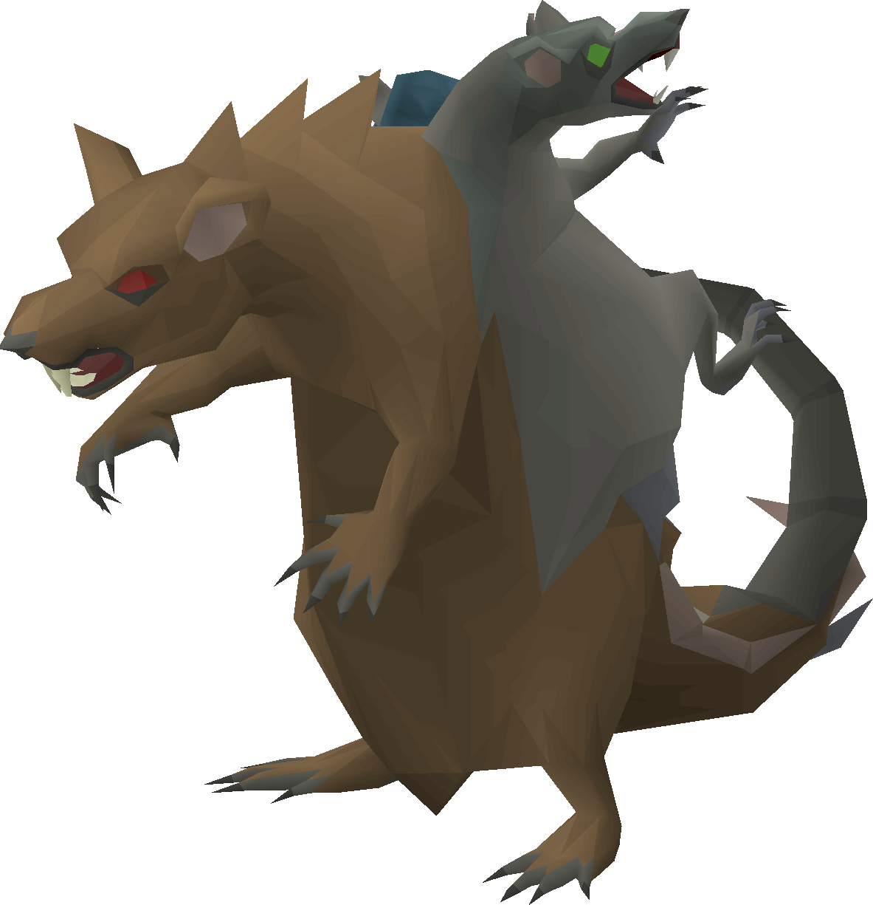
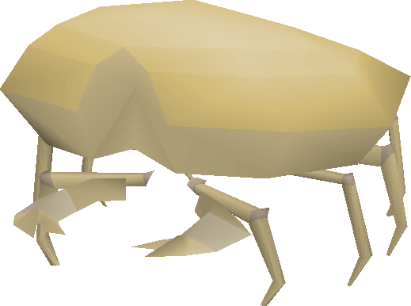

In this release
Today, I’m really excited to share something amazing with you, not just our latest updates, but a look at what we can achieve when we come together as a community. I’m happy to introduce our new release page, showing all the progress happening across every part of the microbot project. This release is a big one and will be one to remember as proof of what open-source work can do.
Our community is moving forward faster than ever, and people are sharing & collaborating all the time. We’re getting better at working together, and we can see the results! People appreciate how simple and easy-to-use the API is, and we’re going to keep that simplicity as we grow.
In this release, you’ll see the impact of everyone’s hard work. It shows what we can accomplish together without competition or negativity. We’re building an open-source project where people collaborate, learn, have fun and respect each other, fueled by the excitement and love for oldschool runescape.
What's new
Web Walker Revamped with support for teleports!
With over 400+ teleports added the web walker can now travel a lot faster and more efficiently!


New Blue Dragons Plugin
Automatically farms blue dragons in Taverley Dungeon, collects bones and banks/restocks. Option to enable scales to be looted too. You must have a falador teleport in your inventor, runes or teletab and also the same amount of food that you have in your config. This uses a safe spot, so you should need anymore more than 1-3 food, used when running there normally. If you are less than 70 agility, you need a dusty key The plugin will bank and restock the food

New Bird Hunter plugin
Implements a bird hunting script with dynamic trap handling. Automatically sets a hunting area based on player location and configurable radius. Manages trap interactions (setting, collecting, and replacing traps). Automatically walks back to the center of the hunting area if outside. Includes snare inventory checks based on player level. AntiBan implementation


New Agility courses
Added wyrm, ape atoll and shayzien courses, as well as enabled the default antiban settings.


ShortestPathPanel
Added a JPanel for the ShortestPathPlugin with four sections to enable easy navigation in the game.

Discord Webhooks
I've added a new API class, Rs2Discord, along with an object model for Discord embeds. This class enables sending webhook messages to a user-defined webhook. Additionally, I've updated the RuneLite profile to include a field for configuring the webhook URL.
I am still working on the plugin to send automated notifications to the configured webhook, but I figured this could at least empower developers to start creating their own webhook messages!

New Herb run plugin
Herb run plugin


New Tempoross plugin

Usage Instructions
A detailed guide on using the plugin in both solo and mass worlds:
Start:
Always begin the plugin outside of the minigame area to ensure correct initialization.
Solo Mode:
In solo mode, the plugin is optimized for achieving an ideal balance between XP and Permits by efficiently managing Tempoross phases. It requires an Infernal Harpoon to handle resource collection and cooking in solo mode, which enables faster fish collection and cooking efficiency.
Mass Worlds:
The plugin adapts dynamically to mass-world mechanics, adjusting behavior based on in-game conditions:
- Storm Clouds: The bot will avoid storm clouds to minimize damage.
- Fire Management: It will extinguish fires that occur, keeping the boat area clear.
- Repairs: The bot handles mast and totem repairs as needed to maintain optimal functionality.
- Tethering: It automatically handles tethering to avoid being blown away during storms.
- Cooking: The bot will efficiently manage fish cooking as part of its strategy.
- Double Fishing Spots: When available, the bot will switch to double fishing spots to maximize efficiency.
New Mahogany homes

This Preview Plugin offers full automation for the Mahogany Homes minigame, designed to streamline every step of the minigame process.
- Contracts: Automatically accepts and completes contracts as they become available.
- Tasks: Manages and executes all tasks within the contracts, including necessary repairs and builds.
- Resupplying: The bot handles resupplying materials when required, ensuring that you’re always ready to complete the next contract.
- Traveling: Efficiently navigates to contract locations across the map, utilizing the best routes thanks to our new walker.
New Cannonball smelter plugin
Start the script in edgeville bank

Bugs fixed
Scurrius plugin

Added more config options for food and prayer Options to select which food, with quantity to withdraw - same with prayer Fixed the prayers to be used correctly and disable/enable correctly to preserve prayer fixed dodging of the dangerous tiles as this wasn't working Added better checking for states, as well as checks for being in the room etc
Rs2Dialogue
- Improved the isInDialogue method by checking if the scrollbar in the chatbox is not visible and hasContinue or hasSelectAnOption is visible.
- Broke out hasContinue and hasSelectAnOption into their own methods, rather than including them all in isInDialogue.
- Created a method to retrieve a list of dialog option widgets if the player is in dialogue.
- Added a method to send a key press for the desired dialog option.
Added more config options for food and prayer Options to select which food, with quantity to withdraw - same with prayer Fixed the prayers to be used correctly and disable/enable correctly to preserve prayer fixed dodging of the dangerous tiles as this wasn't working Added better checking for states, as well as checks for being in the room etc
GE Cooker
For situations where fires may take a long time to build, the script would malfunction. The timeout has simply been increased to 20 seconds from 5 seconds.
TutorialIsland
- Added Random Chance to change gender from current gender
- Added Random Chance to change pronouns from current pronouns
Sandcrab plugin

Fixed bug where banking resulted in RESET_AGGRO state
Guardians of the rift colossal pouch support
Guardians of the rift plugin now supports colossal pouch!
BanksBankStander plugin changes
Added support for grimy herbs, removed unnecessary config option, added item sum tracking. Also added an Overlay entry referencing that I extended the plugin features.
Changed BankStander to allow modified interaction option so people can use it for things like cleaning grimy herbs, scattering ashes, burying bones, etc. also added an extra redundancy check for making sure the bank is closed because on my poor internet connection I've come back to it trying to combine from within the bank.
Nate's Fishing plugin
added harpoon support to nates fishing plugin
Added pike support
MWintertodt Plugin
Being too late to fix a brazier should happen less frequently
Mage's Training arena Plugin
-Added more staff options and all 3 tomes.
-Added max points choice in rewards.
-Support Level 5 and 6 enchants when used with tomes.
-Updated config information for a little more clarity.
-Changed max points to be enough points to buy all rewards on clog.
Shooting star Plugin
Supports the new web walker

Qol Plugin
Misc
- Fix: Remembered menu actions will no longer get cleared randomly; now, they clear upon logging out.
- Fix: Added missing Subscribe annotation, fixing issues with parts of the plugin not functioning properly.
MotherLoad Mine Plugin
Fix: Fixed upper and lower level hopper functionality.
Mining Plugin
Added: Deposit chest support for the Gem Mine.
All 101 commits
- Merge pull request #464 from GirdyB/development
- Merge pull request #467 from See1Duck/development
- Merge pull request #466 from yairtu/development
- fix f2p transport types (mining guild)
- enable run based on runEnergyThreshold
- Merge pull request #462 from yairtu/development
- Merge pull request #463 from g-mason0/development
- fix caves for pathwalker
- fix gnomestronghold agility course
- Merge remote-tracking branch 'origin/development' into development
- fix staircase tree gnome stronghold
- Merge pull request #461 from g-mason0/development
- fix crafting script fix bankstander crafting emeralds
- Merge pull request #457 from lVidStorm/bbankstander
- Merge pull request #455 from yairtu/development
- Merge pull request #454 from lhndl93/scurrius_fix
- Merge pull request #458 from Ratty-p00ned/development
- Merge pull request #453 from g-mason0/development
- add mining guild ladder add isInMembersWorld extra checks added for banklocations in member worlds
- tithe farm minimap fixes
- fix taverly tree location
- showMessage not on a seperate thread, because it didn't show everytime
- fix rfd pathing
- added pike for required items
- Merge pull request #451 from g-mason0/development
- Merge pull request #443 from yairtu/development
- Merge pull request #447 from YifanLi5/mb_dev
- Merge pull request #449 from lhndl93/BLUEDRAGON-FARMER
- shillo village cart fix add mquester config description fixing brazzier MWintertodtScript
- fixed stepping stones
- fixed immington, Corsair Cove ship transport
- Merge pull request #450 from g-mason0/development
- Merge pull request #446 from lVidStorm/bbankstander
- Merge pull request #445 from g-mason0/development
- fixed pest control boat transport reworked npc interaction based on id instead of name fixed shootingstar null pointer exception when starting up avoid walker to stop when interacting with wilderness interface final tile will only be executed if the plane level is the same as the players plane level
- typo
- Merge pull request #442 from g-mason0/development
- added skills necklace teleports
- Merge pull request #440 from chsami/revert-435-actionHotkey
- Revert "Added actionHotkey plugin"
- Merge remote-tracking branch 'origin/development' into development
- Removed duplicate isTethered check and moved it to the main loop. Simplified fishing spot selection
- removed redundant code
- Cleanup
- ## **NEW [Tempoross Plugin]** ### **Usage Instructions** - **New**: A detailed guide on using the plugin in both solo and mass worlds: - **Start**: Always begin the plugin **outside of the minigame area** to ensure correct initialization.
- ## **NEW [Mahogany Homes Plugin]** *(Beta PREVIEW)* - **New**: This **Preview Plugin** offers full automation for the **Mahogany Homes** minigame, designed to streamline every step of the minigame process. - **Contracts**: Automatically accepts and completes contracts as they become available. - **Tasks**: Manages and executes all tasks within the contracts, including necessary repairs and builds. - **Resupplying**: The bot handles resupplying materials when required, ensuring that you’re always ready to complete the next contract. - **Traveling**: Efficiently navigates to contract locations across the map, utilizing the best routes thanks to our new walker.
- ## **NEW Class: [Rs2WorldPoint]** - **Added**: This class extends the WorldPoint class, adding custom methods and features for better WorldPoint management. - **Added**: Notable new method is `distanceToPath`, which calculates the path-based distance between two WorldPoints using the `pathTo` method in the `Rs2Tile` class.
- ## **NEW Class: [Rs2WorldArea]** - **Added**: This class extends the WorldArea class, adding custom methods and features to improve WorldArea handling.
- ## **Class: [Rs2Walker]** - **Added**: `walkNextTo(GameObject target)` method to walk next to a GameObject, typically used for larger GameObjects like trees, rocks, and fires. - **Added**: `walkNextToInstance(GameObject target)` method, similar to `walkNextTo` but designed for GameObjects in instances.
- ## **Class: [Rs2Npc]** - **Added**: `getNearestNpcWithAction` method to get the nearest NPC based on the closest path using a specified action. - **Added**: `getNpcWithAction` method to find the first NPC using a specific action.
- ## **Class: [Rs2Tile]** - **Change**: The class has been changed to an abstract class implementing the `Tile` interface for easier access to all tile methods under one class. - **Added**: `pathTo(Tile start, Tile end)` method, a lightweight and fast pathfinding function to handle local pathfinding, enhancing NPC and GameObject selection based on path distance. - **Added**: `isWalkable(WorldPoint worldPoint)` method.
- ## **Class: [Rs2GameObject]** - **Added**: `getWorldArea(GameObject gameObject)` method to retrieve the world area of a GameObject.
- ## **Class: [Rs2Combat]** - **Fix**: `setAttackStyle()` will no longer get stuck checking if the combat style is already set.
- ## **Class: [Rs2Dialogue]** - **Fix**: `keyPressForDialogueOption` method will now press the correct key for the dialogue option.
- ## **Class: [Rs2Camera]** - **Fix**: Camera angle will now be correctly calculated when using LocalPoint.
- ## **[Antiban]** ### **Misc** - **Change**: "Spammy" logging has been made toggleable in the Antiban settings using the Dev Debug option.
- ## **[QoL Plugin]** ### **Misc** - **Fix**: Remembered menu actions will no longer get cleared randomly; now, they clear upon logging out. - **Fix**: Added missing Subscribe annotation, fixing issues with parts of the plugin not functioning properly.
- ## **[AIO Fighter Plugin]** ### **Safespot** - **Fix**: Fixed incorrect safespot tile selection.
- ## **[Mining Plugin]** - **Added**: Deposit chest support for the Gem Mine.
- ## **[MLM Plugin]** - **Fix**: Fixed upper and lower level hopper functionality.
- ## **[Minnows Plugin]** - **Fix**: Fixed antiban settings to improve performance and efficiency.
- adding support for Farming cape trimmed
- herbrun improvements, reducing reduntant code, added additional gearing toggle
- added harpoon support to nates fishing plugin
- added missing varrock anvil script
- added wilderness check for blighted food and prayer potions, as well as for seedpod teleport in playeralarm, added support for toggle location in herbrun, added harmony support, added added info to plugin info, as well as migrating guide to ConfigInformation panel
- added wilderness check for blighted food and prayer potions, as well as for seedpod teleport in playeralarm, added support for toggle location in herbrun, added harmony support, added added info to plugin info, as well as migrating guide to ConfigInformation panel
- Config now uses @ConfigInformation, various fixes implemented per review in Script class
- Added tag to plugin descriptor. Added script that makes cannonballs.
- fix: doh - this doesn't account for items in the tsv where the destination wouldn't exist in the action. added another ternary expression for the itemAction based on hasMultipleDestination
- update: replace world options to based on runelite profile
- fix: simply handleInventoryTeleports search for locationKeywords, even when item doesn't contain multiple destinations
- fix: remove condition to allow to pickpocket just highlighted NPCs
- fix: refactored handleInventoryTeleports to split up locationKeyWords & genericKeyWords to allow us to check if the destination contains the location name
- fix: adjust searching for inventory itemActions to allow for partial match, re-organized teleport actions to prioritize location specfic names first, then use generic action names fix: set BlueDragons Plugin to not be enabled by default
- fix: convert all inventory actions to be lowercase
- fix: adjust farming guild teleports, one inside with the 45 farming requirements and the other outside fix: update worldpoints for the farming guild for the locations inside of the farming guild
- fix: update destination worldpoint for the farming guild on skills necklace
- fix: changed display info text for monastery on the combat bracelet
- fix: handle lever dialouge option to go through the lever
- fix: make wilderness lever check more accurate
- fix: update display info for dueling ring fix: stop button inside of the walker panel now works correctly
- -Added more staff options and all tomes. -Added max points choice in rewards. -Support Level 5 and 6 enchants when used with tomes -Updated config information for a little more clarity
- -Added more staff options and all tomes. -Added max points choice in rewards. -Support Level 5 and 6 enchants when used with tomes -Updated config information for a little more clarity
- important update to include inventory items when counting required items (Costume needle) for items the player can only have one of.
- made the interaction menu closed by default so people don't assume they have to change it.
- Changed bankstander to allow modification of menu option selected for things like grimy herbs, bones, ashes, etc.
- Added support for grimy herbs, removed unnecessary config option, added item sum tracking.
- Added looting based on item name or value (or both), also fixed up the config
- Fixed the praying of melee, switched it to work on animation rather than projectile. this makes it cleaner and easier to control the flow
- Removed some logging
- Updated the @ConfigInformation
- Automatically farms blue dragons in Taverley Dungeon, collects bones and banks/restocks.
Game images © Jagex Ltd., via the Old School RuneScape Wiki.